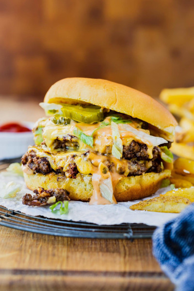

Classic Smash Burger

Description
Create a restaurant style Smash Burger at home in minutes and for a lot less money. You are going to love the crispy brown crust that forms as the burger cooks so quickly.
Ingredients
- 1 soft hamburger roll, buttered and toasted
- Condiments and toppings as desired, such as mayonnaise, mustard, shredded lettuce, onions, tomatoes, and pickles
- 4 ounces (110g) freshly ground beef chuck, divided into two 2-ounce (55g) balls
- Kosher salt and freshly ground black pepper
- 2 slices good melting cheese, such as American, cheddar, or homemade melting cheese
Steps
- Prepare burger bun by laying toppings on bottom half of bun. Have it nearby and ready for when your burger is cooked.
- Preheat a large stainless steel sauté pan or skillet over high heat for 2 minutes. Place balls of beef in pan and smash down with a stiff metal spatula, using a second spatula to add pressure. Smashed patties should be slightly wider than burger bun.
- Season generously with salt and pepper and allow to cook until patties are well browned and tops are beginning to turn pale pink/gray in spots, about 45 seconds. Using a bench scraper or the back side of a stiff metal spatula, carefully scrape patties from pan, making sure to get all of the browned bits.
- Flip patties and immediately place a slice of cheese over both patties then stack the second directly on top. Immediately remove from pan and transfer to waiting burger bun. Serve.